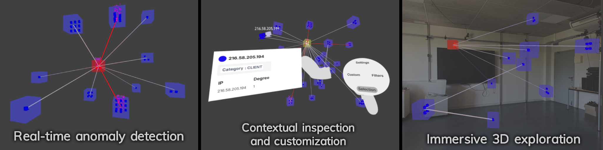

Présentation et contexte
Overview and context
Au cours de mon stage de fin de Master en Imagerie et 3D j'ai éffectué un stage de recherche au sein du laboratoire LIRIS durant lequel je me suis focalisé sur des graphes issus de la surveillance réseau et système informatique avec les noeuds représentant des machines ou des ressources et les arêtes les différents flux et évènements du système. Ces graphes représentent des jumeaux numériques pour les systèmes informatiques.
During my end-of-master's internship in Imaging and 3D, I did a research internship at the LIRIS laboratory, during which I focused on graphs coming from network and computer-system monitoring, with the nodes representing machines or resources and the edges the various flows and events of the system. These graphs are digital twins of computer systems.
Le stage a eu pour objectif principal d'explorer une immersion dans ces jumeaux numériques en implémentant des algorithmes adaptés à la mise en forme et au rendu immersif de ces graphes (layouts 3D, clustering) permettant des interactions naturelles avec le graphe en AR (sélection de noeuds, filtrage, zoom, exploration par communautés).
The main goal of the internship was to explore an immersion into these digital twins by implementing algorithms suited to laying out and immersively rendering these graphs (3D layouts, clustering), enabling natural interactions with the graph in AR (node selection, filtering, zoom, exploration by communities).

Trois panneaux montrant G.A.R.V.I.S. en réalité augmentée
Three panels showing G.A.R.V.I.S. in augmented reality

Architecture de G.A.R.V.I.S. : Intégration de la détection en flux et de la visualisation immersive
G.A.R.V.I.S. architecture: integrating streaming detection and immersive visualisation
Problématique
The problem
Explorer un graphe de grande taille est un défi réel, que ce soit en cybersécurité ou en analyse de réseaux. Les outils de visualisation classiques atteignent vite leurs limites: sur un écran 2D, un graphe dense devient rapidement illisible, les patterns suspects se noient dans le bruit visuel et l'analyste se retrouve à reconstruire manuellement ce que l'outil devrait lui montrer clairement.
Exploring a large graph is a real challenge, whether in cybersecurity or in network analysis. Classic visualisation tools quickly hit their limits: on a 2D screen, a dense graph rapidly becomes unreadable, suspicious patterns drown in the visual noise, and the analyst ends up manually rebuilding what the tool should be showing clearly.
La réalité augmentée offre une réponse à ce problème: en passant à un espace 3D et immersif, elle permet de percevoir intuitivement la structure d'un graphe et ses dynamiques, là où un écran 2D échoue.
Augmented reality offers an answer to this problem: by moving to an immersive 3D space, it lets you intuitively perceive the structure of a graph and its dynamics, where a 2D screen fails.
Fonctionnalités
Features
- Visualisation 3D en réalité augmentée: exploration du graphe réseau dans un espace immersif avec ajustement dynamique de la taille et du niveau de détail
- Navigation par clusters dynamiques: les noeuds s'agrègent en clusters qui se déploient automatiquement à mesure que l'analyste s'en approche
- Menu radial: une impulsion du joystick fait apparaître une roue de sélection ancrée sur la manette droite. Les informations du noeud sélectionné et la personnalisation des modèles s'ancrent au poignet gauche et les filtres et paramètres s'affichent en panneaux flottants.
- Détection d'anomalies en temps réel: inspiré de F-FADE , le moteur compare les fréquences de communication et détecte toute déviation par rapport au comportement attendu et le signal directement dans l'espace virtuel
- Filtre d'attaque: isole instantanément le sous-graphe suspect en atténuant le trafic normal pour une analyse ciblée
- Investigation de noeuds: la sélection d'un noeud met en évidence son voisinage immédiat et affiche ses détails dans le menu poignet
- Reconstruction temporelle: contrôles de simulation permettant de mettre en pause, rewind et rejouer les interactions à vitesse variable
- 3D visualisation in augmented reality: exploring the network graph in an immersive space with dynamic adjustment of size and level of detail
- Navigation by dynamic clusters: nodes aggregate into clusters that automatically expand as the analyst gets closer to them
- Radial menu: a flick of the joystick brings up a selection wheel anchored to the right controller. The selected node's information and model customisation anchor to the left wrist, and filters and parameters appear as floating panels.
- Real-time anomaly detection: inspired by F-FADE , the engine compares communication frequencies and detects any deviation from expected behaviour, flagging it directly in the virtual space
- Attack filter: instantly isolates the suspicious subgraph by dimming normal traffic for a focused analysis
- Node investigation: selecting a node highlights its immediate neighbourhood and shows its details in the wrist menu
- Temporal replay: simulation controls to pause, rewind and replay the interactions at variable speed
Technologies et outils utilisés
Technologies and tools used
L'application a été développée en React pour l'interface web, Three.js pour le rendu 3D et WebXR pour l'intégration de la réalité augmentée. Les tests ont été réalisés sur Meta Quest 3 où l'application restitue une capture réelle de 547 936 flux impliquant 198 machines à 90 images par seconde.
The application was built with React for the web interface, Three.js for the 3D rendering and WebXR for the augmented reality integration. Testing was done on Meta Quest 3, where the application renders a real capture of 547,936 flows involving 198 machines at 90 frames per second.
Vidéo de présentation
Presentation video
Dans le cadre de la soumission d'un article de démonstration à la conférence CoNEXT 26, dont je suis premier auteur, j'ai réalisé une vidéo présentant les fonctionnalités de l'application:
As part of the submission of a demonstration paper at the CoNEXT 26 conference, of which I am first author, I made a video presenting the application's features:
Bilan
Takeaways
Ce stage m'a permis de découvrir le fonctionnement d'un environnement de recherche et ses exigences, notamment le travail bibliographique en amont, qui a directement orienté les choix de conception de l'application. C'est à travers ce projet que j'ai découvert et approfondi Three.js et WebXR.
This internship let me discover how a research environment works and what it demands, in particular the upfront literature work, which directly shaped the design choices of the application. It is through this project that I discovered and deepened my knowledge of Three.js and WebXR.
Le principal défi technique a été de tenir le temps réel: afficher un demi-million de flux réseau dans un casque sans jamais sacrifier la fluidité. Cela a demandé de refondre l'architecture en client-serveur, de remplacer le moteur de données hérité de Gephi-Lite et de passer à un rendu par instanciation GPU. (90 images par seconde sur Meta Quest 3)
The main technical challenge was keeping it real time: displaying half a million network flows in a headset without ever sacrificing smoothness. This meant reworking the architecture into a client-server model, replacing the data engine inherited from Gephi-Lite and switching to GPU-instanced rendering. (90 frames per second on Meta Quest 3)